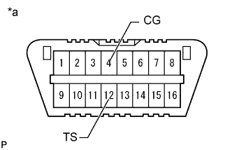
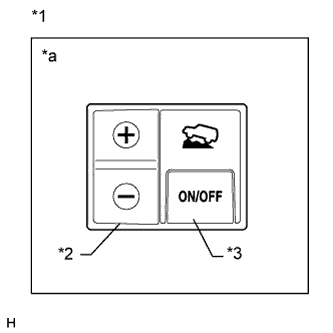

СИСТЕМА КУРСОВОЙ УСТОЙЧИВОСТИ (для моделей с гидравлическим усилителем тормозной системы) > ПОРЯДОК ПРОВЕДЕНИЯ АКТИВНОЙ ДИАГНОСТИКИ |
| ПОРЯДОК АКТИВНОЙ ДИАГНОСТИКИ (ПРОВЕРКИ СИГНАЛОВ) |
Если используется портативный диагностический прибор:
Установите автомобиль на горизонтальную поверхность с наклоном менее 1%.
Выключите зажигание.
Для моделей с механической трансмиссией:
Убедитесь в том, что рычаг переключения передач находится в нейтральном положении, и включите стояночный тормоз.
Для моделей с автоматической трансмиссией:
Убедитесь, что рычаг переключения передач находится в положении Р.
Подсоедините портативный диагностический прибор к DLC3.
Включите зажигание (IG).
Включите портативный диагностический прибор.
Войдите в следующие меню: Chassis / ABS/VSC/TRC / Utility / Signal Check.
Убедитесь, что контрольные лампы ABS и SLIP мигают с интервалом 0,125 с (0,125 с включены, 0,125 с выключены).
Запустите двигатель.
При использовании диагностического жгута проводов SST:
Установите автомобиль на горизонтальную поверхность с наклоном менее 1%.
Выключите зажигание.
Для моделей с механической трансмиссией:
Убедитесь в том, что рычаг переключения передач находится в нейтральном положении, и включите стояночный тормоз.
Для моделей с автоматической трансмиссией:
Убедитесь, что рычаг переключения передач находится в положении Р.
|  |
С помощью SST соедините контакты 12 (TS) и 4 (CG) на DLC3.
| *a | Вид спереди разъема DLC3 |
Включите зажигание (IG).
Убедитесь, что контрольные лампы ABS и SLIP мигают с интервалом 0,125 с (0,125 с включены, 0,125 с выключены).
Запустите двигатель.
Проверка сигналов АБС
Проверка датчика давления в главном цилиндре и датчика замедления
Оставьте автомобиль в неподвижном состоянии на ровной поверхности на время не менее 1 с.
Примите меры, чтобы автомобиль оставался в неподвижном состоянии, отпустите педаль тормоза на 1 с или более, а затем быстро нажимайте на нее с усилием не менее 98 Н (10 кгс, 22 фунт-сила-фута) в течение 1 с.
Убедитесь, что контрольная лампа ABS загорается на 3 с.
Проверка датчика блокировки межосевого дифференциала
Нажмите на переключатель блокировки межосевого дифференциала, чтобы заблокировать межосевой дифференциал.
Нажмите на переключатель блокировки межосевого дифференциала, чтобы разблокировать межосевой дифференциал.
Проверка датчика частоты вращения
Несколько секунд двигайтесь на автомобиле строго прямо со скоростью 45 км/час (28 миль в час) или более (проверка сигнала переднего хода).
Убедитесь, что контрольная лампа ABS погасла.
Двигайтесь на автомобиле задним ходом в течение более 1 с со скоростью не менее 3 км/час (2 мили в час) (проверка сигнала заднего хода).
Убедитесь, что контрольная лампа ABS погасла.
Остановите автомобиль.
Проверка сигнала VSC
Проверка переключателя системы помощи при спуске по склону (для моделей с системой помощи при спуске по склону)
Нажмите на переключатель системы помощи при спуске по склону и убедитесь, что мигает контрольная лампа системы помощи при спуске по склону.
Выключите переключатель системы помощи при спуске по склону.
|  |
Проверка переключателя Crawl (для моделей с системой Crawl)
| *1 | Переключатель режима Crawl |
| *2 | Переключатель выбора скорости |
| *3 | Выключатель ON/OFF (ВКЛ/ВЫКЛ) |
| *a | На рисунке показан переключатель для моделей с левосторонним рулевым управлением |
Нажмите выключатель ON/OFF и убедитесь, что контрольная лампа Crawl горит, пока выключатель удерживается нажатым.
Выключите выключатель ON/OFF (ВКЛ/ВЫКЛ).
Установите заданную скорость автомобиля L (низкая) с помощью переключателя выбора скорости.
Установите заданную умеренно низкую скорость автомобиля с помощью переключателя выбора скорости.
Установите заданную скорость автомобиля M (средняя) с помощью переключателя выбора скорости.
Установите заданную умеренно высокую скорость автомобиля с помощью переключателя выбора скорости.
Установите заданную скорость автомобиля H (высокая) с помощью переключателя выбора скорости.
Установите заданную скорость автомобиля L (низкая) с помощью переключателя выбора скорости.
Проверка выключателя VSC OFF
Нажмите выключатель VSC OFF.
Убедитесь, что загорается контрольная лампа VSC OFF.
Снова нажмите на выключатель VSC OFF, чтобы выключить контрольную лампу VSC OFF.
Конец режима проверки сигналов
После проверки сигналов контрольные лампы ABS и SLIP мигают (0,125 с включены и 0,125 с выключены), если автомобиль остановлен, и гаснут, если автомобиль движется.
Считайте коды DTC режима активной диагностики (проверки сигналов) (с помощью портативного диагностического прибора).
Проверьте, отображаются ли коды DTC на экране портативного диагностического прибора.
Выключите зажигание и отсоедините портативный диагностический прибор.
Считайте коды DTC режима активной диагностики (проверки сигналов) (с помощью диагностического жгута проводов SST).
 |
С помощью SST соедините контакты 13 (TC), 12 (TS) и 4 (CG) на DLC3.
| *a | Вид спереди разъема DLC3 |
Подсчитайте число миганий контрольных ламп ABS и SLIP.
Отсоедините SST от контактов 13 (TC), 12 (TS) и 4 (CG) разъема DLC3.
| ПЕРЕЧЕНЬ DTC АКТИВНОЙ ДИАГНОСТИКИ (ПРОВЕРКИ СИГНАЛОВ) |
| Код DTC | Неисправность | Неисправный участок | |
| Дисплей портативного диагностического прибора | Индикация посредством контрольной лампы ABS | ||
| C1271 | 71 | Сбой выходного напряжения правого переднего датчика частоты вращения |
|
| C1272 | 72 | Сбой выходного напряжения левого переднего датчика частоты вращения |
|
| C1273 | 73 | Сбой выходного напряжения правого заднего датчика частоты вращения |
|
| C1274 | 74 | Сбой выходного напряжения левого заднего датчика частоты вращения |
|
| C1275 | 75 | Ненормальное изменение выходного сигнала правого переднего датчика частоты вращения |
|
| C1276 | 76 | Ненормальное изменение выходного сигнала левого переднего датчика частоты вращения |
|
| C1277 | 77 | Ненормальное изменение выходного сигнала правого заднего датчика частоты вращения |
|
| C1278 | 78 | Ненормальное изменение выходного сигнала левого заднего датчика частоты вращения |
|
| C1279 | 79 | Сбой выходного напряжения датчика замедления |
|
| C1281 | 81 | Сбой выходного сигнала датчика давления в главном цилиндре. | Электромагнитный клапан главного цилиндра (датчик давления в главном цилиндре) |
| C1282 | 82 | Неисправность датчика положения блокировки межосевого дифференциала |
|
| Код DTC | Неисправность | Неисправный участок | |
| Дисплей портативного диагностического прибора | Индикация посредством контрольной лампы скольжения SLIP | ||
| C1379* | 74* | Для моделей с системой помощи при спуске по склону: Неисправность переключателя системы помощи при спуске по склону Для моделей с системой Crawl: Неисправность переключателя Crawl |
|